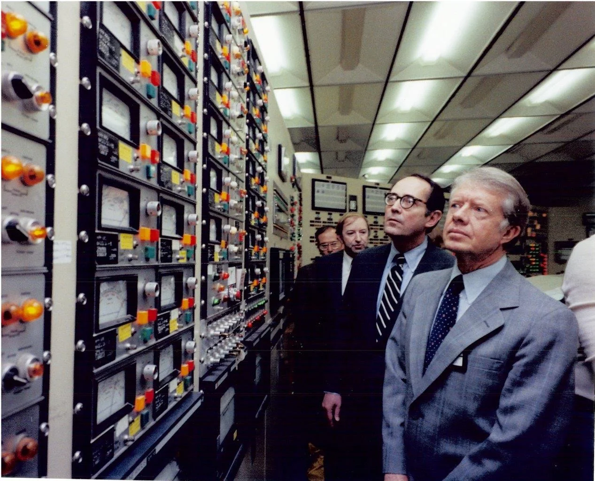
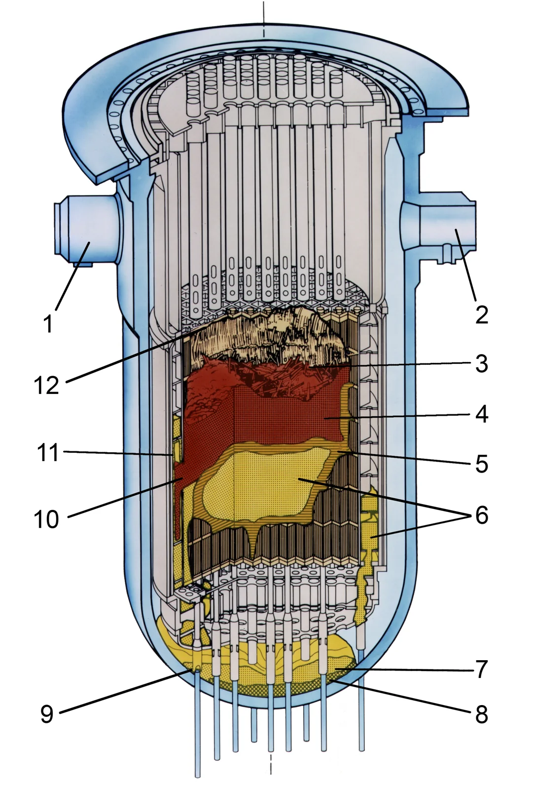
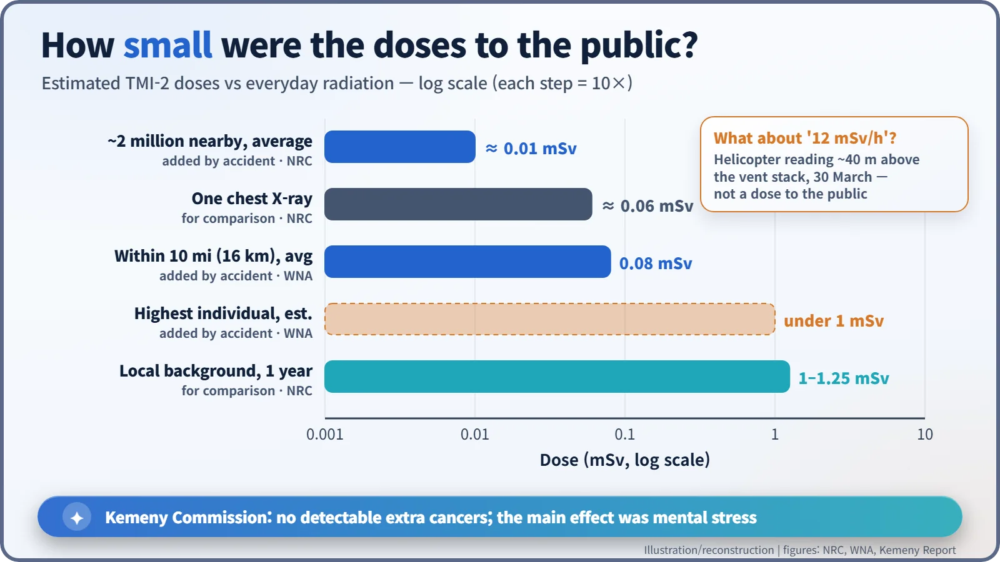

Nuclear History · 251
Two Hours and Twenty-Two Minutes of Trusting a Dark Light — the Three Mile Island Unit 2 Accident (1979)
The light said the relief valve had closed; it had not, and by the time the leak was stopped nearly half the core had melted, yet the vessel held.
At 4 a.m. on 28 March 1979 a relief valve at Unit 2 of the Three Mile Island nuclear plant in Pennsylvania stuck open, while a control-panel light told the operators it had closed. For two hours and twenty-two minutes coolant drained away, and by the time the accident was over nearly half the core had melted. Yet the reactor vessel and containment held, and the doses received by the public were very small.
A light that said the wrong thing
At 4 a.m. on Wednesday 28 March 1979, alarms began going off all at once in the control room of Unit 2 at Three Mile Island, an island in the Susquehanna River near Middletown, Pennsylvania. The unit had been in commercial operation for only about three months. Among hundreds of flashing lamps, the operators relied on one: a light showing that power to the pressurizer relief valve had gone off. The valve, they concluded, had closed. In fact it was stuck open, and that belief lasted for two hours and twenty-two minutes.

A confident industry with a nervous public
By the late 1970s the American ordering boom for nuclear plants was over, construction costs were climbing and opposition was growing. By coincidence, The China Syndrome, a film about a near-disaster at a nuclear plant, had opened on 15 March 1979, twelve days before the accident. [4]
Thirteen seconds at 4 a.m.
The trouble started not in the reactor but on the turbine side. At 4:00:36 a.m. local time the main feedwater pumps that supplied the steam generators stopped. With the heat no longer carried away, pressure rose and the pilot-operated relief valve (PORV) on the pressurizer, a safety valve that vents steam when pressure is too high, opened. About eight seconds later the reactor shut down automatically, exactly as designed. [1]
Thirteen seconds in, the pressure fell back and the PORV should have closed. It did not. The control-panel light showed not where the valve actually was but whether the signal to close it had been sent. In the words of the presidential commission's report, the light "indicated that the electric power that opened the PORV had gone off." Coolant kept escaping through the open valve. This was not a giant pipe break but a slow drain through a small hole: a small-break loss-of-coolant accident. [1]

A gauge that seemed to say "too much water"
A second misreading followed. The high-pressure emergency injection pumps started automatically, but the operators saw the pressurizer level climbing and concluded that the system was filling up with too much water. They shut one pump and throttled the other right back. In reality, falling pressure was making steam bubbles form in the coolant and push the level up, rather like a shaken bottle of soda whose foam rises to the neck while the amount of liquid is actually going down. [1]
At 5:14 a.m., and again 27 minutes later, the operators switched off all four reactor coolant pumps because they were vibrating badly. The upper part of the core became uncovered and overheated, and the zirconium cladding reacted with steam to make hydrogen. At 6:22 a.m. the operators closed the block valve beneath the PORV and the leak stopped. Forced cooling returned only at 7:50 that evening, when one coolant pump was restarted. [1] [2]
What had happened inside was learned much later. At least 45% of the core, about 62 tonnes, had melted, and about 19 tonnes had run down to the bottom of the reactor vessel. Yet the steel vessel was not breached and the containment building held. Cameras and core samples confirmed this only in the mid-1980s. [2]

The Friday that spread the fear
The real confusion came on the third day, Friday 30 March. At 8:01 a.m. a helicopter measured 1,200 millirem per hour (12 mSv/h) about 40 metres (130 feet) above the plant's vent stack. Right over the stack, a high reading was to be expected, but the number was passed along as if it described what people outside were receiving, and talk of evacuation became urgent. Around midday Governor Richard "Dick" Thornburgh (1932–2020) advised pregnant women and preschool children within 5 miles (about 8 km) to leave, and schools in that radius were closed. Within days about 140,000 people had left the area on their own. [1] [4]
The same day, fear spread that a hydrogen bubble at the top of the reactor might explode. Even inside the regulator the calculations disagreed, but the prevailing judgement was that there was not enough oxygen for an explosion, and on the afternoon of 1 April the bubble was confirmed to be shrinking. That afternoon President Jimmy Carter (1924–2024), who had served in the Navy's nuclear submarine program, pulled on yellow plastic shoe covers and toured the plant, control room included. [1]
The radiation, in numbers
Most of the radioactive material released was noble gas, and estimates vary widely between sources, from about 93 to 480 petabecquerels. The doses people received, however, were small. The U.S. Nuclear Regulatory Commission (NRC) estimates that the roughly 2 million people around the plant received an average of about 0.01 mSv on top of their normal background dose, less than one chest X-ray (about 0.06 mSv). The average within 10 miles was 0.08 mSv, and the highest individual dose is estimated at under 1 mSv. [2] [3]

Health studies and the long clean-up
The president's commission, chaired by John Kemeny, concluded that there would be no detectable additional cancers and that the main health effect was mental stress on the people of the region. The Pennsylvania Department of Health followed more than 30,000 people for 18 years and found no unusual trends. Some re-analyses, such as one by Steven Wing's group in 1997, claimed increases in cancer, but most studies and the NRC did not accept a causal link. [1] [2]
The clean-up ran until December 1993 and cost about $973 million; the damaged fuel was shipped to Idaho, a job completed in April 1990. Unit 1 on the same island restarted in 1985 and ran until 2019. [2]
The machinery largely held. What went wrong was how people interpreted a single light. The lesson of the accident was therefore less about stronger hardware and more about information that people can read correctly, a question soon taken up by the presidential commission.